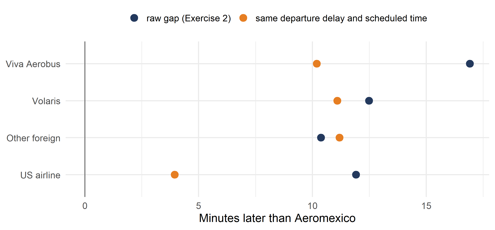
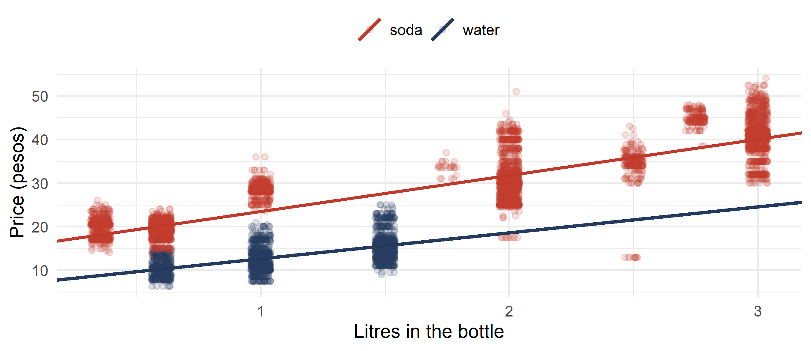
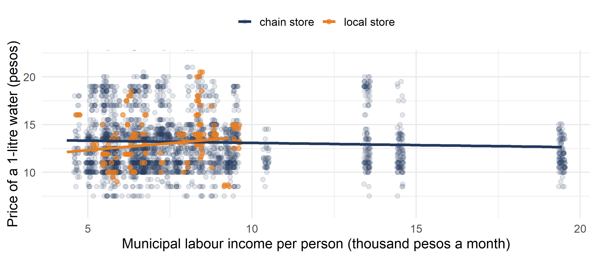
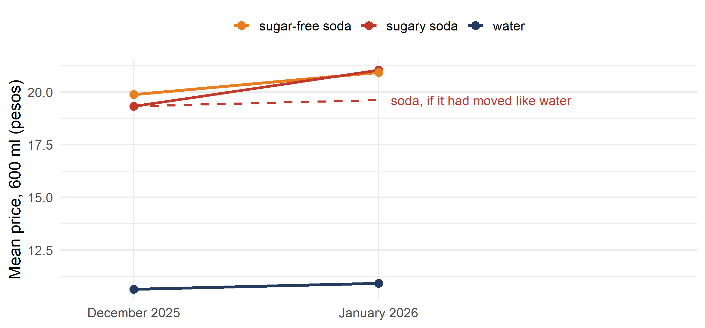

Business Forecasting
Week 10 forecast the arrival delay at Mexico City airport from the departure delay and the scheduled time. flights$carrier puts each flight in one of five groups:
An airline’s operations team wants to know where it stands: which airline lands latest on average, and which earliest?
One variable, five groups: how a regression reads it.
Which airline has the highest mean arrival delay? Which has the lowest? How many minutes apart are they?
flights$arr_delay for each of the five values of flights$carrier.mean(flights$arr_delay[flights$carrier == "Volaris"]) is the mean for Volaris.
Aeromexico flights land earliest, 20.0 minutes before schedule on average. Viva Aerobus flights land latest, only 3.1 minutes early: 16.9 minutes later than Aeromexico.
lm() accepts a text column as a regressor. What do its coefficients mean?
flights$arr_delay on flights$carrier.carrierVolaris with the gap between the Volaris mean and the Aeromexico mean.\[\text{arr_delay}_i = \cssId{mt-c0}{\beta_0} + \cssId{mt-c1}{\beta_1}\,\text{other}_i + \cssId{mt-c2}{\beta_2}\,\text{us}_i + \cssId{mt-c3}{\beta_3}\,\text{viva}_i + \cssId{mt-c4}{\beta_4}\,\text{volaris}_i + \cssId{mt-cu}{u_i}\]
| carrier | Mean arrival delay | Coefficient |
|---|---|---|
| Aeromexico | -20.00 | base |
| Other foreign | -9.62 | 10.38 |
| US airline | -8.08 | 11.91 |
| Viva Aerobus | -3.08 | 16.92 |
| Volaris | -7.51 | 12.48 |
Each flight belongs to exactly one airline, so the five dummies always add up to 1:
\[\cssId{mt-dsum}{\text{aeromexico}_i + \text{other}_i + \text{us}_i + \text{viva}_i + \text{volaris}_i} = \cssId{mt-one}{1}\]
The column of 1s for the intercept is already in \(\mathbf{X}\). What happens if all five dummies go in with it?
flights$volaris <- (flights$carrier == "Volaris") * 1.flights$arr_delay on four of them: other, us, viva, volaris. Compare with Exercise 2.aeromexico. What does summary() print for it? Why?flights$aeromexico <- (flights$carrier == "Aeromexico") * 1
flights$other <- (flights$carrier == "Other foreign") * 1
flights$us <- (flights$carrier == "US airline") * 1
flights$viva <- (flights$carrier == "Viva Aerobus") * 1
flights$volaris <- (flights$carrier == "Volaris") * 1
reg4 <- lm(arr_delay ~ other + us + viva + volaris, data = flights)
summary(reg4)
reg5 <- lm(arr_delay ~ other + us + viva + volaris + aeromexico, data = flights)
summary(reg5)With four dummies the output is the same as Exercise 2. With the fifth, aeromexico shows NA: the five columns add up to the column of 1s, an exact copy, so \(\mathbf{X}\) is not full rank. One category must always be left out.
Aeromexico’s flights land earliest. But the airlines may differ in more than the airline: how late their flights leave, and how long they fly.
Which airline lands latest for the same departure delay and the same scheduled time?
flights$arr_delay on flights$dep_delay, flights$sched_time and flights$carrier.The US airlines’ gap falls from 11.9 to 3.9 minutes, and Viva Aerobus from 16.9 to 10.2. Their flights leave later (29.0 and 24.9 minutes on average, against 18.9 for Aeromexico), and alone the airline coefficient took the credit for the late departures. Volaris barely moves: its flights leave about as late as Aeromexico’s.

A category with many groups uses many degrees of freedom. Does it earn them?
flights$weekday has seven categories; R takes Friday, first in alphabetical order, as the base. That is six dummies.
Which earns its place in the forecast of week 10: the day of the week or the airline?
flights$arr_delay on flights$dep_delay and flights$sched_time. Note the adjusted \(R^2\).flights$weekday. Note the adjusted \(R^2\). Which days differ from Friday at 5%?weekday with carrier. Note the adjusted \(R^2\).| Regressors | Dummies | adjusted \(R^2\) |
|---|---|---|
| dep_delay + sched_time | 0 | 0.7687 |
| + weekday | 6 | 0.7692 |
| + carrier | 4 | 0.8008 |
The days add almost nothing: only Thursday (1.54 minutes, \(T = 3.57\)) and Saturday (0.95, \(T = 2.03\)) differ from Friday at 5%. The airline, with fewer dummies, raises the adjusted \(R^2\) by 0.032.
Do the six days matter together, even if most are not significant one by one? That is one test of several coefficients at once: week 12.
When the effect of one regressor depends on another.
PROFECO inspectors record shelf prices in stores all over Mexico (“Quién es Quién en los Precios”, open data). drinks has 498 stores in 30 states, November 2025 to February 2026. One row is one item in one store in one month (the median of the visits).
| Column | What it is |
|---|---|
price |
shelf price, pesos |
litres, units |
litres in the pack; containers in it (1, 6 or 12) |
product, brand, diet |
soda, water or beer; the brand; 1 if a sugar-free soda |
format, chain, store |
store type; chain; the store |
local |
1 for a store outside the national chains: public markets, regional supermarkets, Neto, Circle K |
income |
municipal labour income per person, thousand pesos a month |
month, after |
the month; after is 1 from January 2026 |
Sources: PROFECO, Quién es Quién en los Precios; INEGI, Encuesta Intercensal 2025.
sw holds the soft drinks and the bottled water of November 2025, one bottle at a time, up to 3 litres: 7,585 prices.
In week 10, a 0/1 regressor moved the whole line and kept its slope. Does an extra litre add the same number of pesos to a soda and to a bottle of water?
price on litres for the soda only, and then for the water only.sw$water, 1 for water and 0 for soda. Regress sw$price on sw$litres and sw$water.sw[sw$product == "soda", ] keeps the soda. (sw$product == "water") * 1 makes the 0/1 column.
Alone, soda adds 8.29 pesos per litre and water 5.95. The model with a 0/1 regressor forces one slope on both: 8.20 pesos per litre, close to the soda slope because most rows are soda.
\[\text{price}_i = \cssId{mt-i0}{\beta_0} + \cssId{mt-i1}{\beta_1}\,\text{litres}_i + \cssId{mt-i2}{\beta_2}\,\text{water}_i + \cssId{mt-i3}{\beta_3}\,(\text{litres}_i \times \text{water}_i) + u_i\]
sw$litres_water <- sw$litres * sw$water.Does an extra litre add fewer pesos to water than to soda? By how many?
sw$water and sw$litres_water, the product of sw$litres and sw$water.sw$price on sw$litres, sw$water and sw$litres_water.Soda: 8.29 pesos per litre. Water: 8.29 + (-2.34) = 5.95, the slopes of the two separate regressions. The interaction has \(T = -8.93\): an extra litre of water adds 2.34 pesos less than an extra litre of soda.

litres turns the line.Week 10 found that the national chains set national prices: municipal income barely moved the price of a soda.
wat holds the bottled water up to 1.5 litres, November 2025 to February 2026: 8,522 prices, 677 of them in local stores.
Does the price rise with municipal income in local stores, when it does not in the chains?
wat$price on wat$litres and wat$income.wat$income_local, the product of wat$income and wat$local. Regress wat$price on wat$litres, wat$income, wat$local and wat$income_local.A local store is dearer when the coefficient on local, plus the coefficient on income_local times the income, is above zero.
Alone, income moves the price by -0.036 pesos per 1,000 pesos. In a chain store: -0.046. In a local store: -0.046 + 0.339 = 0.293 pesos per 1,000 pesos of income. The interaction is significant (\(T = 5.55\)). Local stores are cheaper in poorer municipalities and dearer above about 7.9 thousand pesos: 2.68 / 0.339.

An interaction of two 0/1 regressors, and what a new tax did to prices.
Did stores pass the tax on to the shelf price? Comparing December with January is not enough: prices change in January for other reasons too.
Water pays no tax but goes through the same January. Its change shows what would have happened to soda without the tax.
tax600 holds the 600 ml bottles of soda and water in December 2025 and January 2026. tax600$group is “sugary soda”, “sugar-free soda” or “water”; tax600$after is 1 in January.
sw600 <- tax600[tax600$group != "sugar-free soda", ]. Create sw600$sugar (1 for sugary soda) and sw600$sugar_after, the product of sugar and after.sw600$price on sugar, after and sugar_after. Match each coefficient to the four means.sugar_after with the extra tax in the bottle, 1.00 peso.mean(tax600$price[tax600$group == "sugary soda" & tax600$after == 0])
mean(tax600$price[tax600$group == "sugary soda" & tax600$after == 1])
mean(tax600$price[tax600$group == "water" & tax600$after == 0])
mean(tax600$price[tax600$group == "water" & tax600$after == 1])
sw600 <- tax600[tax600$group != "sugar-free soda", ]
sw600$sugar <- (sw600$group == "sugary soda") * 1
sw600$sugar_after <- sw600$sugar * sw600$after
reg <- lm(price ~ sugar + after + sugar_after, data = sw600)
summary(reg)Water rose from 10.63 to 10.93 pesos (\(\beta_2 = 0.29\)); sugary soda from 19.32 to 21.04. The extra rise of soda is \(\beta_3 = 1.42\) pesos (\(T = 10.8\)), more than the 1.00 peso of extra tax: the stores passed on more than the tax.
| 600 ml bottle | December | January | Change |
|---|---|---|---|
| sugary soda | 19.32 | 21.04 | 1.71 |
| water | 10.63 | 10.93 | 0.29 |
| difference | 8.69 | 10.11 | 1.42 |
\[\text{price}_i = \cssId{mt-d0}{\beta_0} + \cssId{mt-d1}{\beta_1}\,\text{sugar}_i + \cssId{mt-d2}{\beta_2}\,\text{after}_i + \cssId{mt-d3}{\beta_3}\,(\text{sugar}_i \times \text{after}_i) + u_i\]
Sugar-free soda went from no tax to 1.5 pesos per litre: 1.04 peso in a 600 ml bottle, with VAT. Did the stores pass that on?
dw600 <- tax600[tax600$group != "sugary soda", ].after.The extra change for sugar-free soda is 0.75 peso (\(T = 3.9\)), less than the 1.04 peso of new tax. Sugary soda rose by more than its tax; sugar-free soda by less than its tax.

lm() and read each coefficient as a gap to the base category.Next week: inference with several regressors. Is Volaris really later than Viva Aerobus? Do the six days matter together? How sure are we of a forecast?
Weekly exercise set: W11_exercises.pdf, with solutions in W11_solutions.pdf.
You can already solve exercises 12 and 14, most of 8, 10 and 17, and 11 (b).
Not in these slides: 8 (f) and 9 use a 0/1 outcome, 9 (h) a squared regressor and 9 (i) standardized coefficients, which this course does not cover. 10 (d), 11 (a) and 16 compare two coefficients; 10 (h) and 11 (c) need intervals for a forecast; 11 (d)–(e), 13 and 15 test several coefficients at once or the assumptions: all week 12.
Suggested before the next class, closest to the exam:
| Exercise | Topic | How |
|---|---|---|
| 8 (a)–(e) | Inflation forecasts, financial literacy and a college degree (inflation_expectations) |
R with the data |
| 10 (a)–(c), (e)–(g) | Weekly pay, children and marital status (cps) |
R with the data |
| 12 | Reading an interaction of a 0/1 and a continuous regressor | By hand |
| 17 (a)–(d) | Hours, pay and the gender gap (ENOE) | R with the data |
Problems from this week’s set, and a question from the Spring 2026 final. ← Back to the summary · ← Back to Practice for this week
[P3 #8]
inflation holds 290 people in the United States, 2007–2008, from the probstats4econ package (inflation_expectations).
inflation$inflation_pred — the inflation they expect next year, percentage pointsinflation$age — age, yearsinflation$finlit_score — financial literacy score, out of 12inflation$collgrad — 1 for a college graduateinflation$famincome_hi — 1 if family income is above 75,000 dollarsRegress inflation_pred on the four regressors. Which slopes are significant at 5%?
Interpret the slope on finlit_score.
Interpret the slope on collgrad.
Draw a histogram of the fitted values.
Add the product of finlit_score and collgrad. What is the p-value of the interaction? What is the slope on finlit_score for a college graduate, and for someone without a degree?
reg <- lm(inflation_pred ~ age + finlit_score + collgrad + famincome_hi, data = inflation)
summary(reg)
hist(fitted(reg))
inflation$finlit_coll <- inflation$finlit_score * inflation$collgrad
reg_e <- lm(inflation_pred ~ age + finlit_score + collgrad + famincome_hi + finlit_coll,
data = inflation)
summary(reg_e)finlit_score (\(T = -5.76\)) and collgrad (\(T = -2.37\)).
With the rest fixed, one more point of financial literacy goes with a forecast 0.74 points lower.
With the rest fixed, college graduates expect 1.50 points less inflation.
The interaction is 0.724 with p-value 0.006. Without a degree, one more literacy point lowers the forecast by 0.977; for a graduate by \(-0.977 + 0.724 = -0.253\). Literacy matters much less for graduates.
[P3 #10]
cps holds 4,013 people aged 30 to 59 from the 2019 Current Population Survey (probstats4econ). cps$earnwk is pay last week, dollars; cps$gender is “Female” or “Male”; cps$ownchild the number of own children at home; cps$marstatus has four categories; cps$age and cps$educ are in years.
Regress earnwk on gender. Interpret the two coefficients.
Add ownchild. What happens to the coefficient on gender?
Create cps$female (1 for women) and its product with ownchild. Regress earnwk on female, ownchild and the product. Interpret the coefficients.
Drop the product and add marstatus, age and educ to the model of (b). What happened to the gender coefficient?
How many dummies does marstatus use? Why?
Interpret the coefficient on the Married dummy.
reg_a <- lm(earnwk ~ gender, data = cps)
summary(reg_a)
reg_b <- lm(earnwk ~ gender + ownchild, data = cps)
summary(reg_b)
cps$female <- (cps$gender == "Female") * 1
cps$female_child <- cps$female * cps$ownchild
reg_c <- lm(earnwk ~ female + ownchild + female_child, data = cps)
summary(reg_c)
reg_e <- lm(earnwk ~ gender + ownchild + marstatus + age + educ, data = cps)
summary(reg_e)Women earn 803.49 dollars a week on average (the base); men 313.81 more.
Almost nothing: 312.34. Children hardly differ between men and women.
For men, each child goes with 77.56 dollars more a week; for women with \(77.56 - 104.44 = -26.88\). With no children, women earn 232.38 less than men.
The gap grows to 349.65 dollars once marital status, age and education are held fixed.
Three: four categories, and Divorced (first in alphabetical order) is the base.
Married people earn 108.96 dollars a week more than divorced people of the same gender, children, age and education.
[P3 #12]
100 people recorded their weight loss \(w\) (kg) after three months. \(d = 1\) for those on a new diet; \(h\) is weekly hours of exercise. The fitted model is
\[\hat{w} = -1.4 + 7.2\,d + 1.5\,h + 3.4\,d h\]
Which statement is correct?
People who neither exercise nor follow the diet have a negative weight, which makes no sense.
People who follow the diet but do not exercise lose more than 5 kg.
For people not on the diet, one hour of exercise a week lowers weight by about 4.5 kg.
For people on the diet, one hour of exercise a week lowers weight by 10.7 kg.
[P3 #14]
A gym has three memberships: limited, full and luxury. Muscle gain after three months is regressed on membership dummies and an intercept. The ANOVA table shows a total of 256 degrees of freedom and sums of squares of 500 (regression) and 1,200 (total).
What are the regression degrees of freedom and the sample size?
[17]
w12 holds the 2,000 ENOE workers of 2022 drawn in the set (Canvas, 02 Data, ENOE_salaries.Rda): w12$Income (monthly pesos), w12$Hours_worked_lw (hours last week) and w12$Female (1 for women).
Regress Income on Hours_worked_lw and Female. Report the three coefficients and \(R^2\).
Interpret the coefficient on Female. What does this model assume about the slope on hours for the two groups?
Add the product of Hours_worked_lw and Female. Write the fitted line for men and for women.
Which group’s pay rises faster with hours?
Is the difference in slopes significant at 5%? At 10%?
Write two sentences for an HR director.
\(\widehat{\text{Income}} = 6{,}147.5 + 70.19\,\text{hours} - 1{,}111.3\,\text{Female}\), \(R^2 = 0.0488\).
Women earn 1,111 pesos a month less than men who work the same hours. The model gives both groups the same slope on hours.
Men: \(6{,}881.6 + 54.79\,\text{hours}\). Women: \((6{,}881.6 - 2{,}537.5) + (54.79 + 33.31)\,\text{hours} = 4{,}344.1 + 88.11\,\text{hours}\).
Women: 88.11 pesos a month per weekly hour, against 54.79 for men.
\(T = 1.88\), p-value 0.061: not significant at 5%, significant at 10%.
Women’s pay seems to rise faster with hours than men’s, so the gap is widest for part-time work. The evidence is weak: significant only at 10%, and \(R^2\) rises from 0.0488 to 0.0504.
[Spring 2026 final, Q13–Q18]
A Mexican manufacturer exports cars and boats to the United States. In the second quarter of 2025 the US put a tariff on cars, not on boats. exports holds the quarterly sales of each product, 2002 to 2026 (simulated exam data): exports$Sales, exports$car (1 for cars) and exports$after_q2_2025 (1 from 2025 Q2).
Match each combination of (car, after_q2_2025) — (0,0), (1,0), (0,1), (1,1) — to boats or cars, before or after the tariff.
Build the product of car and after_q2_2025 and regress Sales on the three regressors. What are the predicted boat sales before the tariff? After?
Interpret the coefficient on after_q2_2025.
What are the predicted car sales before the tariff?
Interpret the coefficient on car.
What is the effect of the tariff on car sales?
(0,0) boats before; (1,0) cars before; (0,1) boats after; (1,1) cars after.
Boats before: \(\beta_0 = 61{,}548\). After: \(61{,}548 + 17{,}097 = 78{,}645\).
Boat sales rose by 17,097 after 2025 Q2: the change that came without the tariff.
\(61{,}548 + 30{,}304 = 91{,}852\).
Before the tariff, cars sold 30,304 more per quarter than boats.
The coefficient on the product: cars changed by 40,037 less than boats, so the tariff cut car sales by about 40,000 per quarter (\(T = -3.35\)).
Another base category, by hand.
To compare every airline with Volaris, leave Volaris out instead of Aeromexico. Build the dummies with arithmetic (as in Exercise 3) and choose which four go in:
| Dummy | Minutes later than Volaris |
|---|---|
| aeromexico | -11.10 |
| other | 0.09 |
| us | -7.15 |
| viva | -0.90 |
dep_delay and sched_time, and every forecast are unchanged. Only the base moves.